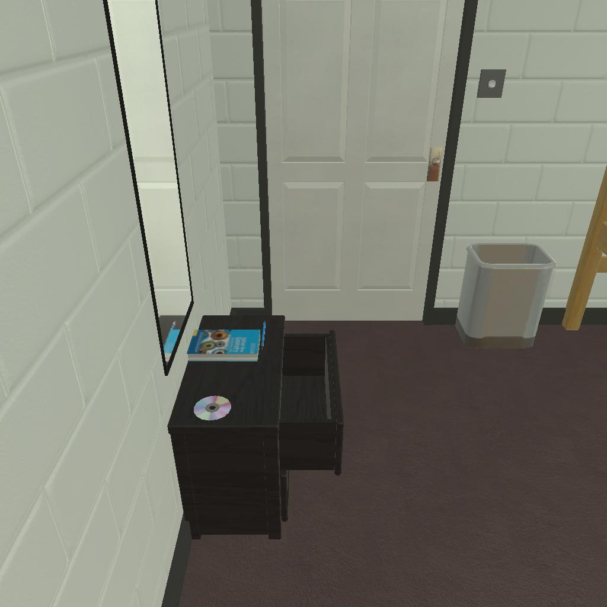

---------------------------------------------------------task: 8---------------------------------------------------------
--------------------------------------------------------------------------------------------------------------------------------------------------------------------
--------------------------------------------------------------------------------------------------------------------------------------------------------------------
Step:--------------------------------------------------------------------------13-------------------------------------------------------------------------------
----------------------------------------
VLM Prompt:
**Task**
Please perform as an embodied AI agent. Our final objective is to put a laptop in desk. Below is the plan for completing the task, the current observation, alongside historical data and admissible actions for the next step. Please determine the best action for the next step!
**Plan**
Below is a detailed step-by-step plan to complete the task.
1. Find a credit card.
2. Pick up the credit card.
3. Locate an armchair.
4. Place the credit card on the armchair.
5. Find another credit card.
6. Pick up the second credit card.
7. Return to the same armchair.
8. Place the second credit card on the armchair with the first one.
9. Find a laptop.
10. Pick up the laptop.
11. Locate a desk.
12. Place the laptop on the desk.
**Current Observation**
Displayed is an image capturing the current position of the agent.
**History Information**
Displayed are the previous observations with their corresponding actions.
State 1:
1. Step Index in the Plan: 1
2. Objects: Sidetable, CD, Magazine
3. Action: go to sidetable 1
State 2:
1. Step Index in the Plan: 1
2. Objects: Sidetable, CD, Magazine
3. Action: go to drawer 1
State 3:
2. Step Index in the Plan: Unknown
3. Objects: Sidetable, CD, Magazine, Drawer
4. Action: open drawer 1
State 4:
1. Step Index in the Plan: Next step after placing the first credit card on the armchair
2. Objects: Bed (reflected in mirror), Drawer 1 (open, no credit card)
3. Action: go to drawer 2
State 5:
1. Step Index in the Plan: 9
2. Objects: Bed, Desk, Sidetable, Drawer (open, without laptop)
3. Action: go to drawer 3
State 6:
1. Step Index in the Plan: 9
2. Objects: Desk, Credit Card, Phone, Small Items
3. Action: go to drawer 4
State 7:
1. Step Index in the Plan: 11
2. Objects: Desk, Credit Card, Phone, Small Items
3. Action: go to desk 1
State 8:
1. Step Index in the Plan: 11
2. Objects: Desk, Alarm Clock, Cellphone, Writing Utensils
3. Action: go to drawer 5
State 10:
1. Step Index in the Plan: 12
2. Objects: Desk, Alarm Clock, Cellphone, Pencil, Pen
3. Action: go to drawer 5
State 11:
1. Step Index in the Plan: 12
2. Objects: Desk, Alarm Clock, Cellphone, Pencil, Pen, Laptop
3. Action: open drawer 5
State 12:
1. Step Index in the Plan: 12
2. Objects: Desk, Alarm Clock, Cellphone, Pencils, Pen
3. Action: go to desk 1
State 13:
1. Step Index in the Plan: 12
2. Objects: Wall, Doorframe
3. Action: go to sidetable 1
**Admissible Actions**
(1): go to bed 1
(2): go to garbagecan 1
(3): go to drawer 1
(4): go to drawer 2
(5): go to laundryhamper 1
(6): go to drawer 3
(7): go to drawer 4
(8): go to drawer 5
(9): take book 1 from sidetable 1
(10): take lightswitch 1 from sidetable 1
(11): take cd 1 from sidetable 1
(12): take pen 1 from sidetable 1
**Analysis Guideline**
1. Analyze the history and current observation, and then determine our current step in the plan and our current place.
2. List all visible objects related to the task in the current observation, without summarizing any as "various items."
3. Analyze the objects in the current observation based on the history and the requirements for the current step, and then determine if we can complete the step with the current observation.
4. Analyze and decide on the most appropriate action to take.
5. Summarize the analysis using the following format: "Analysis: [The summarization of the analysis], The Most Appropriate Action: (i which is the integer.): [Selected action]"
**Notes**
1. We must complete each step of the plan in order and cannot skip steps when the previous ones are not finished.
2. For "Go to" actions listed as "go to xxx [n]", interpret this as there are n distinct actions available: "go to xxx 1", "go to xxx 2", ..., "go to xxx n". Select one specific action from these options instead of using "go to xxx [n]".
3. If receptacles such as drawers, cabinets, and so forth are closed in the current observation, we may try to open them.
4. Pay attention to synonyms and ensure clarity in the terms used.
5. We must determine and provide the single action which must be in the **Admissible Actions**.
6. If there is no history available, we are at the first step and the current place is "Unknown".
**Answer**
Please select the most suitable action by following the **Analysis Guideline**, keeping the above **Notes** in mind.
----------------------------------------
----------------------------------------
VLM Response:
Analysis: The current step in the plan is to place the laptop on the desk (step 12), as indicated by the history information in State 11 and State 12, which show the laptop being found and the agent being instructed to go to the desk. The current observation shows the agent in a location with a sidetable visible, containing a CD and other items. The desk, which is the target location for placing the laptop, is not visible in the current observation. Therefore, the agent must move to the location of the desk in order to complete the current step. The most appropriate action from the admissible actions is to go to drawer 5, as this action has been associated with the desk in the past observations (State 10 and State 11), which is where the laptop needs to be placed.
The Most Appropriate Action: (8): go to drawer 5
----------------------------------------
----------------------------------------
>>> Refine VLM Response and Get Pure Action: go to drawer 5
----------------------------------------
-----------------------------------------------------------------
Running time: 11.37334132194519 seconds
Total Money: 0
-----------------------------------------------------------------
-----------------------------------------------------------------
Summarization Prompt:
**Context**
Analysis: Since there is no history information, we are at the first step in the plan, which is to find a statue. The current place is unknown. In the current observation, we see a floorlamp next to an armchair with a small table that has a small object on it, which could potentially be the statue we are looking for. Since the plan requires us to find a statue first and it appears there might be one on the table next to the armchair, we should investigate this object to determine if it is the statue we need.
The Most Appropriate Action: (1): go to armchair 1
**Summary**
1. Step Index in the Plan: 1
2. Objects: Floorlamp, Armchair, Small Table, Small Object (potential statue)
3. Action: go to armchair 1
**Context**
Analysis: The current step in the plan is to place the laptop on the desk (step 12), as indicated by the history information in State 11 and State 12, which show the laptop being found and the agent being instructed to go to the desk. The current observation shows the agent in a location with a sidetable visible, containing a CD and other items. The desk, which is the target location for placing the laptop, is not visible in the current observation. Therefore, the agent must move to the location of the desk in order to complete the current step. The most appropriate action from the admissible actions is to go to drawer 5, as this action has been associated with the desk in the past observations (State 10 and State 11), which is where the laptop needs to be placed.
The Most Appropriate Action: (8): go to drawer 5
Please summarize the context by following above examples when providing the summary, and ensure that only the summary is included, without any extra explanation.
**Summary**
-----------------------------------------------------------------
-----------------------------------------------------------------
Summarization Response:
1. Step Index in the Plan: 12
2. Objects: Sidetable, CD, Other Items
3. Action: go to drawer 5
-----------------------------------------------------------------
-----------------------------------------------------------------
Text Observation:You arrive at loc 9. The drawer 5 is open. On the drawer 5, you see a desklamp 1, a alarmclock 1, a laundryhamperlid 1, a alarmclock 2, a cellphone 1, a creditcard 1, a pen 2, a pencil 1, a pencil 2, and a keychain 1.
-----------------------------------------------------------------
UNSUCCEED